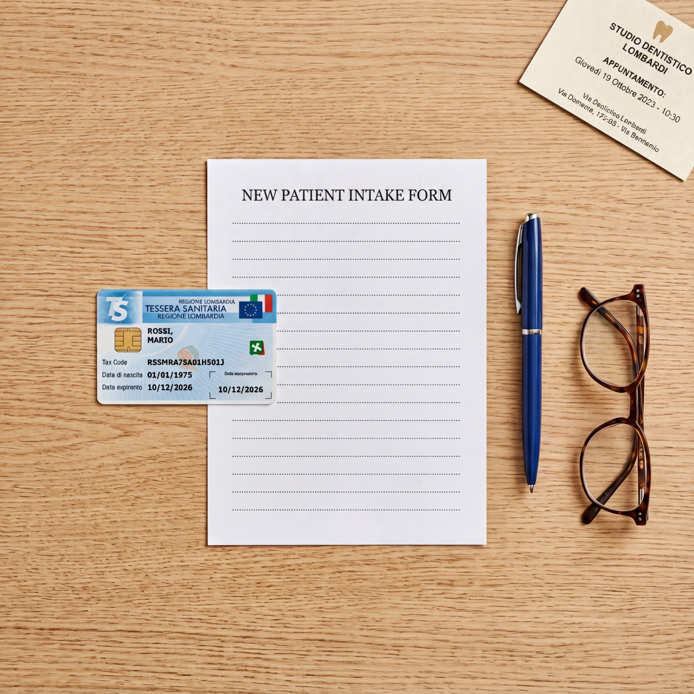

La tua prima visita
Un momento importante per conoscerci, capire le tue esigenze e costruire insieme il percorso di cura.
Un momento importante per conoscerci, capire le tue esigenze e costruire insieme il percorso di cura.
Passo dopo passo
La prima visita è pensata per mettere il paziente a proprio agio e raccogliere tutte le informazioni necessarie per proporre un piano di cura personalizzato.
Ti riceveremo in centro, raccoglieremo i tuoi dati e ti chiederemo di compilare un breve questionario sulla tua storia clinica.
Il dottore ascolterà le tue esigenze, i tuoi eventuali disturbi e risponderà a ogni domanda. Nessun giudizio, solo ascolto.
Un'ispezione attenta del cavo orale, delle gengive e dell'occlusione. Se necessario, verranno eseguite radiografie diagnostiche.
Ti verrà presentato un piano di trattamento chiaro, con indicazione delle priorità, dei tempi e delle opzioni disponibili. Nessuna sorpresa.

Consigli pratici
Per rendere la prima visita il più efficace possibile, ti chiediamo di portare con te la tessera sanitaria, un documento d'identità, eventuali radiografie recenti (se le possiedi) e la lista dei farmaci che assumi abitualmente.
Se hai già una diagnosi o un piano di trattamento proposto da un altro professionista, puoi portare anche quello: saremo felici di offrire un secondo parere.
Ti consigliamo di arrivare 10 minuti prima dell'orario fissato per compilare con calma la documentazione. Se sei iscritto al fondo Sani.In.Veneto, porta con te la tessera per verificare la copertura delle prestazioni.
Domande frequenti
Circa 30-45 minuti, che includono il colloquio conoscitivo, l'esame clinico e l'eventuale esecuzione di radiografie.
Di norma la prima visita è dedicata alla diagnosi e alla raccolta delle informazioni. I trattamenti vengono programmati nelle sedute successive, dopo la presentazione del piano di cura. In caso di urgenza, si interviene tempestivamente.
Sì, il centro accoglie pazienti di ogni età, dai bambini agli anziani. Per i più piccoli adottiamo un approccio delicato, pensato per avvicinarli alla cura dei denti in modo sereno.